网络请求中，客户端工作流程
搬运自《网络是怎么链接的》
在一次请求中，浏览器生成消息的过程主要分为4️步：
- 生成 HTTP 请求消息
从用户在浏览器中输入网址（URL）开始。接下来，浏览器的工作会从对用户输入的网址进行解析开始。然后，浏览器会根据网址的含义来生成请求消息。浏览器通过请求消息将用户需要哪些数据告知服务器，只要理解了具体的消息长什么样，我们也就能够理解访问 Web 服务器时使用的 HTTP 协议的原理了。 - 向 DNS 服务器查询 Web 服务器的 IP 地址
请求消息生成之后，浏览器会委托操作系统向 Web 服务器发送请求，但浏览器必须告诉操作系统接收方的 IP 地址才行，因此浏览器必须先查出 Web 服务器的 IP 地址。网址中只有 Web 服务器的域名，因此浏览器需要向 DNS 服务器查询域名对应的 IP 地址。 - 全世界 DNS 服务器的大接力
这时，进入到了 DNS 服务器帮助浏览器查询 IP 地址这一环节了。全世界共有上万台 DNS 服务器，它们相互接力才能完成 IP 地址的查询。 - 委托协议栈发送消息
查询到 IP 地址之后，浏览器就可以将消息委托给操作系统发送给 Web 服务器了，但这个委托到底是如何完成的呢？“委托给操作系统”这句话看似简单，但关于委托给操作系统，其实有非常详细的规则，必须要遵守这些规则才能完成操作。由于只有编写程序的人才需要精通这些规则，所以面向一般读者的图书中几乎很少见到对这些规则的解释。不过，对这些规则有个大概的理解还是会有很多好处的，因为理解了向操作系统进行委托时的规则，我们就能够明白做出某个委托时操作系统会给我们怎样的反馈，这可以说是相当于具体地理解了网络的潜在能力。这一点对于没有编程经验的人来说也很重要。
生成 HTTP 请求消息
从输入网址开始
网址，准确来说应该叫 URL，之所以有各种各样的 URL，是因为尽管我们通常是使用浏览器来访问 Web 服务器的，但实际上浏览器并不只有这一个功能，它也可以用来在 FTP 服务器上下载和上传文件，同时也具备电子邮件客户端的功能。可以说，浏览器是一个具备多种客户端功能的综合性客户端软件，因此它需要一些东西来判断应该使用其中哪种功能来访问相应的数据，而各种不同的 URL 就是用来干这个的，比如访问 Web 服务器时用“http:”，而访问 FTP 服务器时用“ftp:”。
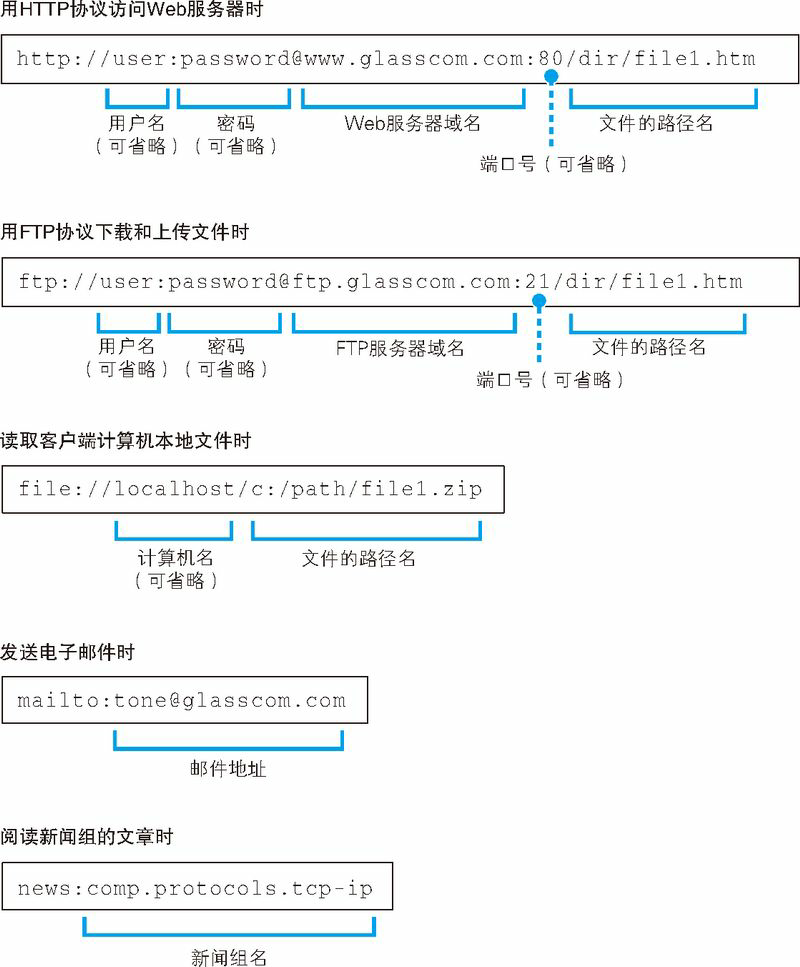
列举了现在互联网中常见的几种 URL，根据访问目标的不同，URL 的写法也会不同。例如在访问 Web 服务器和 FTP 服务器时，URL 中会包含服务器的域名和要访问的文件的路径名等，而发邮件的 URL 则包含收件人的邮件地址。此外，根据需要，URL 中还会包含用户名、密码、服务器端口号等信息。
浏览器先要解析 URL
浏览器要做的第一步工作就是对 URL 进行解析，从而生成发送给 Web 服务器的请求消息。刚才我们已经讲过，URL 的格式会随着协议的不同而不同，因此下面我们以访问 Web 服务器的情况为例来进行讲解。
根据 HTTP 的规格，URL 包含图 1.2（a）中的这几种元素。当对 URL 进行解析时，首先需要按照图 1.2（a）的格式将其中的各个元素拆分出来，例如图 1.2（b）中的 URL 会拆分成图 1.2（c）的样子。然后，通过拆分出来的这些元素，我们就能够明白 URL 代表的含义。例如，我们来看拆分结果图 1.2（c），其中包含 Web 服务器名称 www.lab.glasscom.com，以及文件的路径名 /dir1/file1.html，因此我们就能够明白，图 1.2（b）中的 URL 表示要访问 www.lab.glasscom.com 这个 Web 服务器上路径名为 /dir/file1.html 的文件，也就是位于 /dir/ 目录下的 file1.html 这个文件（图 1.3）。
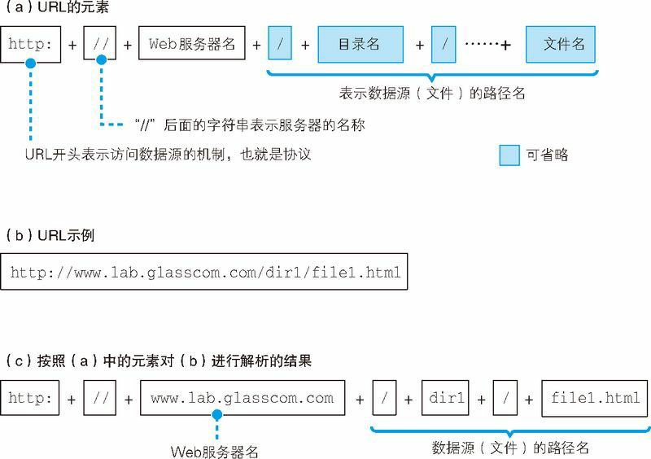
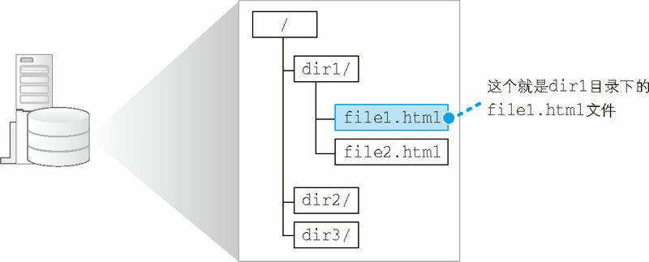
省略文件名的情况
图 1.2（b）是一个以“http:”开头的典型 URL，但有时候我们也会见到一些不太一样的 URL，例如下面这个 URL 是以“/”来结尾的。
（a）http://www.lab.glasscom.com/dir/
我们可以这样理解，以“/”结尾代表 /dir/ 后面本来应该有的文件名被省略了。根据 URL 的规则，文件名可以像前面这样省略。
不过，没有文件名，服务器怎么知道要访问哪个文件呢？其实，我们会在服务器上事先设置好文件名省略时要访问的默认文件名。这个设置根据服务器不同而不同，大多数情况下是 index.html 或者 default.htm 之类的文件名。因此，像前面这样省略文件名时，服务器就会访问 /dir/index.html 或者 /dir/default.htm。
还有一些 URL 是像下面这样只有 Web 服务器的域名的，这也是一种省略了文件名的形式。
（b）http://www.lab.glasscom.com/
这个 URL 也是以“/”结尾的，也就是说它表示访问一个名叫“/”的目录。而且，由于省略了文件名，所以结果就是访问 /index.html 或者 /default.htm 这样的文件了。
那么，下面这个 URL 又是什么意思呢？
（c）http://www.lab.glasscom.com
这次连结尾的“/”都省略了。像这样连目录名都省略时，真不知道到底在请求哪个文件了，实在有些过分。不过，这种写法也是允许的。当没有路径名时，就代表访问根目录下事先设置的默认文件，也就是 /index.html 或者 /default.htm 这些文件，这样就不会发生混乱了。
不过，下面这个例子就更诡异了。
（d）http://www.lab.glasscom.com/whatisthis
前面这个例子中，由于末尾没有“/”，所以 whatisthis 应该理解为文件名才对。但实际上，很多人并没有正确理解省略文件名的规则，经常会把目录末尾的“/”也给省略了。因此，或许我们不应该总是将 whatisthis 作为文件名来处理。一般来说，这种情况会按照下面的惯例进行处理：如果 Web 服务器上存在名为 whatisthis 的文件，则将 whatisthis 作为文件名来处理；如果存在名为 whatisthis 的目录，则将 whatisthis 作为目录名来处理。
HTTP 的基本思路
解析完 URL 之后，我们就知道应该要访问的目标在哪里了。接下来，浏览器会使用 HTTP 协议来访问 Web 服务器
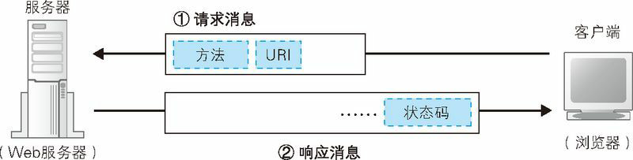
HTTP 协议定义了客户端和服务器之间交互的消息内容和步骤，其基本思路非常简单。首先，客户端会向服务器发送请求消息（图 1.4）。请求消息中包含的内容是“对什么”和“进行怎样的操作”两个部分。其中相当于“对什么”的部分称为 URI（URI：Uniform Resource Identifier，统一资源标识符）。一般来说，URI 的内容是一个存放网页数据的文件名或者是一个 CGI 程序的文件名，例如“/dir1/file1.html”“/dir1/program1.cgi”等（实际上，这个文件在 Web 服务器上未必是真实存在的，因为 Web 服务器可以通过重写规则对虚拟的 URI 进行映射）。不过，URI 不仅限于此，也可以直接使用“http:”开头的 URL来作为 URI。换句话说就是，这里可以写各种访问目标，而这些访问目标统称为 URI。
相当于接下来“进行怎样的操作”的部分称为方法（也叫 HTTP 谓词，或者 HTTP 动词）。方法表示需要让 Web 服务器完成怎样的工作，其中典型的例子包括读取 URI 表示的数据、将客户端输入的数据发送给 URI 表示的程序等。表 1.1 列举了主要的方法，通过这张表大家应该能够理解通过方法可以执行怎样的操作。
表 1.1 HTTP 的主要方法
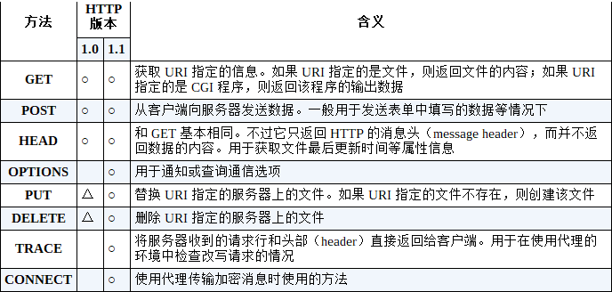
- ○：在该版本的规格中定义的项目。
- △：并非正式规格，而是在规格书附录（Appendix）中定义的附加功能。
上述 1.0 版本和 1.1 版本的描述分别基于 RFC1945 和 RFC2616。
HTTP 消息中还有一些用来表示附加信息的头字段。客户端向 Web 服务器发送数据时，会先发送头字段，然后再发送数据。不过，头字段属于可有可无的附加信息。
收到请求消息之后，Web 服务器会对其中的内容进行解析，通过 URI 和方法来判断“对什么”“进行怎样的操作”，并根据这些要求来完成自己的工作，然后将结果存放在响应消息中。在响应消息的开头有一个状态码，它用来表示操作的执行结果是成功还是发生了错误。当我们访问 Web 服务器时，遇到找不到的文件就会显示出 404 Not Found 的错误信息，其实这就是状态码。状态码后面就是头字段和网页数据。响应消息会被发送回客户端，客户端收到之后，浏览器会从消息中读出所需的数据并显示在屏幕上。到这里，HTTP 的整个工作就完成了。
最常用的一个就是 GET 方法了。一般当我们访问 Web 服务器获取网页数据时，使用的就是 GET 方法。所谓一般的访问过程大概就是这样的：首先，在请求消息中写上 GET 方法，然后在 URI 中写上存放网页数据的文件名“/dir1/file1.html”，这就表示我们需要获取 /dir1/file1.html 文件中的数据。当 Web 服务器收到消息后，会打开 /dir1/file1.html 文件并读取出里面的数据，然后将读出的数据存放到响应消息中，并返回给客户端。最后，客户端浏览器会收到这些数据并显示在屏幕上。
还有一个经常使用的方法就是 POST。我们在表单中填写数据并将其发送给 Web 服务器时就会使用这个方法。当我们在网上商城填写收货地址和姓名，或者是在网上填写问卷时，都会遇到带有输入框的网页，而这些可以输入信息的部分就是表单。使用 POST 方法时，URI 会指向 Web 服务器中运行的一个应用程序的文件名，典型的例子包括“index.cgi”“index.php”等。然后，在请求消息中，除了方法和 URI 之外，还要加上传递给应用程序和脚本的数据。这里的数据也就是用户在输入框里填写的信息。当服务器收到消息后，Web 服务器会将请求消息中的数据发送给 URI 指定的应用程序。最后，Web 服务器从应用程序接收输出的结果，会将它存放到响应消息中并返回给客户端。
如果只有 GET 和 POST 方法，我们就只能从 Web 服务器中获取网页数据，以及将网页输入框中的信息发送给 Web 服务器，而有了 PUT 和 DELETE 方法，就能够从客户端修改或者删除 Web 服务器上的文件。有了这些功能，我们甚至可以将 Web 服务器当成文件服务器来用。
生成 HTTP 请求消息
对 URL 进行解析之后，浏览器确定了 Web 服务器和文件名，接下来就是根据这些信息来生成 HTTP 请求消息了。实际上，HTTP 消息在格式上是有严格规定的，因此浏览器会按照规定的格式来生成请求消息（图 1.5）。
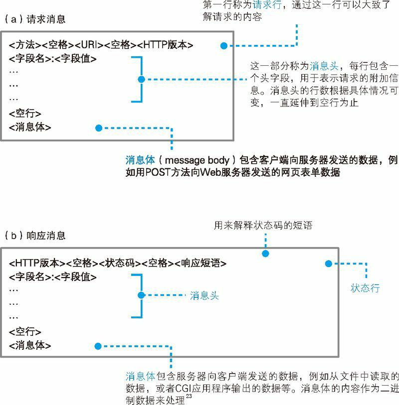
准确来说，消息体的格式会通过消息头中的 Content-Type 字段来定义（MIME 类型）。
首先，请求消息的第一行称为请求行。这里的重点是最开头的方法，方法可以告诉 Web 服务器它应该进行怎样的操作。不过这里必须先解决一个问题，那就是方法有很多种，我们必须先判断应该选用其中的哪一种。
解决这个问题的关键在于浏览器的工作状态。一般是从在浏览器顶部的地址栏中输入网址开始的，但浏览器并非只有在这一种场景下才会向 Web 服务器发送请求消息。比如点击网页中的超链接，或者在表单中填写信息后点击“提交”按钮，这些场景都会触发浏览器的工作，而选用哪种方法也是根据场景来确定的。
我们的场景是在地址栏中输入网址并显示网页，因此这里应该使用 GET 方法。点击超级链接的场景中也是使用 GET 方法。如果是表单，在 HTML 源代码中会在表单的属性中指定使用哪种方法来发送请求，可能是 GET 也可能是 POST。
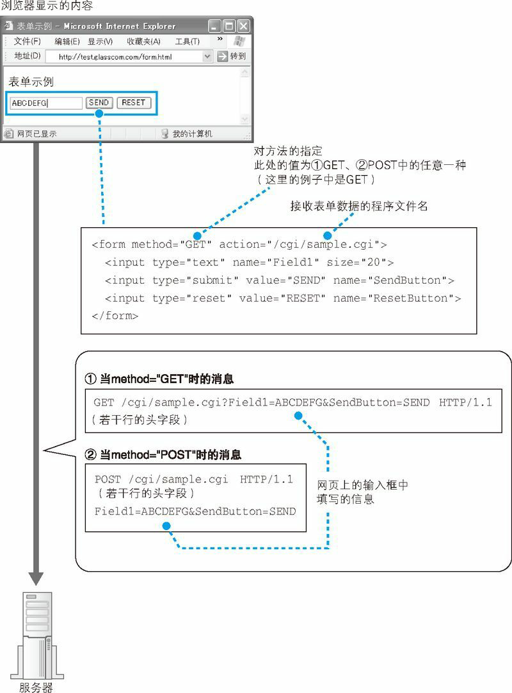
GET 方法能够发送的数据只有几百个字节，如果表单中的数据超过这一长度，则必须使用 POST 方法来发送。
第一行的末尾需要写上 HTTP 的版本号，这是为了表示该消息是基于哪个版本的 HTTP 规格编写的。到此为止，第一行就结束了。
第二行开始为消息头。尽管通过第一行我们就可以大致理解请求的内容，但有些情况下还需要一些额外的详细信息，而消息头的功能就是用来存放这些信息。消息头的规格中定义了很多项目，如日期、客户端支持的数据类型、语言、压缩格式、客户端和服务器的软件名称和版本、数据有效期和最后更新时间等。这些项目表示的都是非常细节的信息，因此要想准确理解这些信息的意思，就需要对 HTTP 协议有非常深入的了解。
写完消息头之后，还需要添加一个完全没有内容的空行，然后写上需要发送的数据。这一部分称为消息体，也就是消息的主体。不过，在使用 GET 方法的情况下，仅凭方法和 URI，Web 服务器就能够判断需要进行怎样的操作，因此消息体中不需要填写任何数据。消息体结束之后，整个消息也就结束了。
当使用 POST 方法时，需要将表单中填写的信息写在消息体中。到此为止，请求消息的生成操作就全部完成了。
发送请求后会收到响应
当我们将上述请求消息发送出去之后，Web 服务器会返回响应消息。
响应消息的格式以及基本思路和请求消息是相同的（图 1.5（b）），差别只在第一行上。在响应消息中，第一行的内容为状态码和响应短语，用来表示请求的执行结果是成功还是出错。状态码和响应短语表示的内容一致，但它们的用途不同。状态码是一个数字，它主要用来向程序告知执行的结果；相对地，响应短语则是一段文字，用来向人们告知执行的结果。
状态码的第一位数字表示状态类型，第二、三位数字表示具体的情况。下表列举了第一位数字的含义。
| 状态码 | 含义 |
|---|---|
| 1xx | 告知请求的处理进度和情况 |
| 2xx | 成功 |
| 3xx | 表示需要进一步操作 |
| 4xx | 客户端错误 |
| 5xx | 服务器错误 |
返回响应消息之后，浏览器会将数据提取出来并显示在屏幕上，我们就能够看到网页的样子了。如果网页的内容只有文字，那么到这里就全部处理完毕了，但如果网页中还包括图片等资源，则还有下文。
当网页中包含图片时，会在网页中的相应位置嵌入表示图片文件的标签的控制信息。浏览器会在显示文字时搜索相应的标签，当遇到图片相关的标签时，会在屏幕上留出用来显示图片的空间，然后再次访问 Web 服务器，按照标签中指定的文件名向 Web 服务器请求获取相应的图片并显示在预留的空间中。这个步骤和获取网页文件时一样，只要在 URI 部分写上图片的文件名并生成和发送请求消息就可以了。
由于每条请求消息中只能写 1 个 URI，所以每次只能获取 1 个文件，如果需要获取多个文件，必须对每个文件单独发送 1 条请求。比如 1 个网页中包含 3 张图片，那么获取网页加上获取图片，一共需要向 Web 服务器发送 4 条请求。
判断所需的文件，然后获取这些文件并显示在屏幕上，这一系列工作的整体指挥也是浏览器的任务之一，而 Web 服务器却毫不知情。Web 服务器完全不关心这 4 条请求获取的文件到底是 1 个网页上的还是不同网页上的，它的任务就是对每一条单独的请求返回 1 条响应而已。
到这里，我们已经介绍了浏览器与 Web 服务器进行交互的整个过程。作为参考，下图展示了浏览器与 Web 服务器之间交互消息的一个实例。在这个例子中，我们需要获取一张名为 sample1.htm 的网页，网页中包含一张名为 picture.jpg 的图片，图中展示了这个过程中产生的消息。
1 条请求消息中只能写 1 个 URI。如果需要获取多个文件，必须对每个文件单独发送 1 条请求。
HTTP 消息示例:
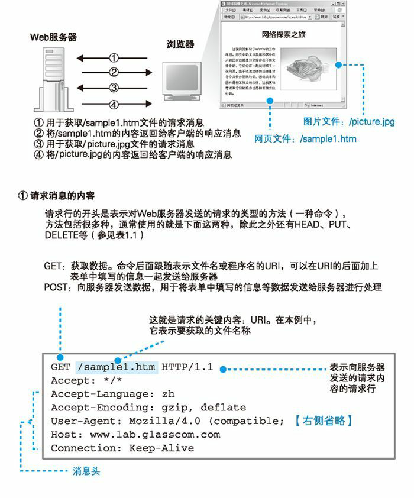
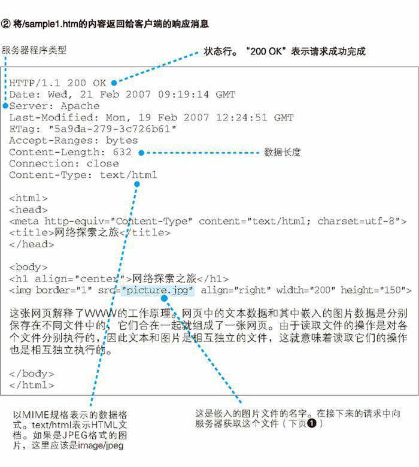
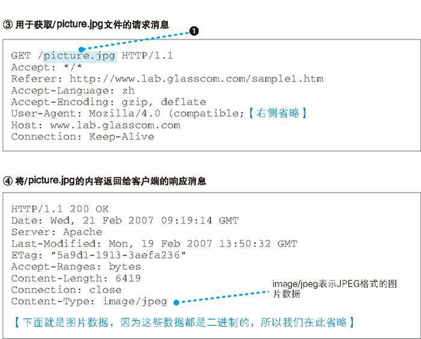
向 DNS 服务器查询 Web 服务器的 IP 地址
#### IP 地址的基本知识
生成 HTTP 消息之后，接下来我们需要委托操作系统将消息发送给 Web 服务器。尽管浏览器能够解析网址并生成 HTTP 消息，但它本身并不具备将消息发送到网络中的功能，因此这一功能需要委托操作系统来实现（发送消息的功能对于所有的应用程序来说都是通用的，因此让操作系统来实现这一功能，其他应用程序委托操作系统来进行操作，这是一个比较合理的做法）。在进行这一操作时，我们还有一个工作需要完成，那就是查询网址中服务器域名对应的 IP 地址。在委托操作系统发送消息时，必须要提供的不是通信对象的域名，而是它的 IP 地址。因此，在生成 HTTP 消息之后，下一个步骤就是根据域名查询 IP 地址。
互联网和公司内部的局域网都是基于 TCP/IP 的思路来设计的，先来了解 TCP/IP 的基本思路。TCP/IP 的结构如下图所示，就是由一些小的子网，通过路由器连接起来组成一个大的网络。这里的子网可以理解为用集线器连接起来的几台计算机，我们将它看作一个单位，称为子网。将子网通过路由器连接起来，就形成了一个网络。
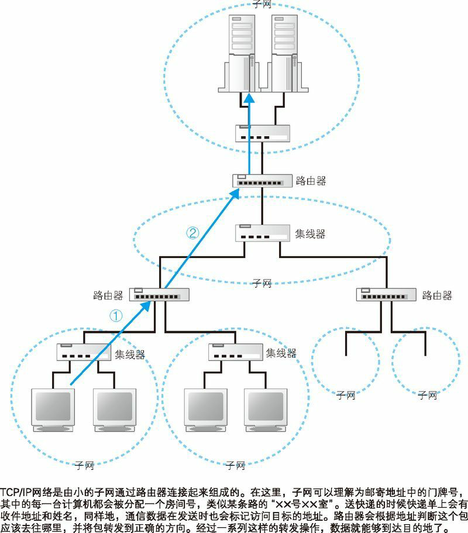
在网络中，所有的设备都会被分配一个地址。这个地址就相当于现实中某条路上的“×× 号 ×× 室”。其中“号”对应的号码是分配给整个子网的，而“室”对应的号码是分配给子网中的计算机的，这就是网络中的地址。“号”对应的号码称为网络号，“室”对应的号码称为主机号，这个地址的整体称为 IP 地址。通过 IP 地址我们可以判断出访问对象服务器的位置，从而将消息发送到服务器。消息传送的具体过程在后面的章节有详细讲解，不过现在我们先简单了解一下。发送者发出的消息首先经过子网中的集线器，转发到距离发送者最近的路由器上（图 1.8 ①）。接下来，路由器会根据消息的目的地判断下一个路由器的位置，然后将消息发送到下一个路由器，即消息再次经过子网内的集线器被转发到下一个路由器（图 1.8 ②）。前面的过程不断重复，最终消息就被传送到了目的地。
实际的 IP 地址。如图 1.9 所示，实际的 IP 地址是一串 32 比特的数字，按照 8 比特（1 字节）为一组分成 4 组，分别用十进制表示然后再用圆点隔开。这就是我们平常经常见到的 IP 地址格式，但仅凭这一串数字我们无法区分哪部分是网络号，哪部分是主机号。在 IP 地址的规则中，网络号和主机号连起来总共是 32 比特，但这两部分的具体结构是不固定的。在组建网络时，用户可以自行决定它们之间的分配关系，因此，我们还需要另外的附加信息来表示 IP 地址的内部结构。
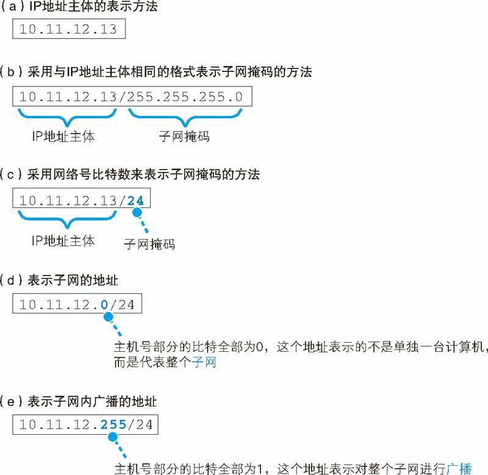
域名和 IP 地址并用的理由
TCP/IP 网络是通过 IP 地址来确定通信对象的，因此不知道 IP 地址就无法将消息发送给对方，这和我们打电话的时候必须要知道对方的电话号码是一个道理。因此，在委托操作系统发送消息时，必须要先查询好对方的 IP 地址。
可能你会问“既然如此，那么在网址中不写服务器的名字，直接写 IP 地址不就好了吗？”实际上，如果用 IP 地址来代替服务器名称也是能够正常工作的。然而，就像你很难记住电话号码一样，要记住一串由数字组成的 IP 地址也非常困难。因此，相比 IP 地址来说，网址中还是使用服务器名称比较好。
不过从运行效率上来看，这并不能算是一个好主意。互联网中存在无数的路由器，它们之间相互配合，根据 IP 地址来判断应该把数据传送到什么地方。那么如果我们不用 IP 地址而是改用名称会怎么样呢？ IP 地址的长度为 32 比特，也就是 4 字节，相对地，域名最短也要几十个字节，最长甚至可以达到 255 字节。换句话说，使用 IP 地址只需要处理 4 字节的数字，而域名则需要处理几十个到 255 个字节的字符，这增加了路由器的负担，传送数据也会花费更长的时间（域名并不仅是长，而且其长度是不固定的。处理长度不固定的数据比处理长度固定的数据要复杂，这也是造成效率低下的重要原因之一）。可能有人会说：“那使用高性能路由器不就能解决这个问题了吗？”然而，路由器的速度是有极限的，而互联网内部流动的数据量已然让路由器疲于应付了，因此我们不应该再采用效率更低的设计。随着技术的发展，路由器的性能也会不断提升，但与此同时，数据量也在以更快的速度增长，在可预见的未来，这样的趋势应该不会发生变化。出于这样的原因，使用名称本身来确定通信对象并不是一个聪明的设计。
于是，现在我们使用的方案是让人来使用名称，让路由器来使用 IP 地址。为了填补两者之间的障碍，需要有一个机制能够通过名称来查询 IP 地址，或者通过 IP 地址来查询名称，这样就能够在人和机器双方都不做出牺牲的前提下完美地解决问题。这个机制就是 DNS（DNS：Domain Name System，域名服务系统。将服务器名称和 IP 地址进行关联是 DNS 最常见的用法，但 DNS 的功能并不仅限于此，它还可以将邮件地址和邮件服务器进行关联，以及为各种信息关联相应的名称）。
Socket 库提供查询 IP 地址的功能
查询 IP 地址的方法非常简单，只要询问最近的 DNS 服务器“www.lab.glasscom.com 的 IP 地址是什么”就可以了，DNS 服务器会回答说“该服务器的 IP 地址为 xxx.xxx.xxx.xxx”。这一步非常简单，很多读者也都很熟悉，那么浏览器是如何向 DNS 服务器发出查询的呢？让我们把向 Web 服务器发送请求消息的事情放一放，先来探索一下 DNS。
向 DNS 服务器发出查询，也就是向 DNS 服务器发送查询消息，并接收服务器返回的响应消息。换句话说，对于 DNS 服务器，我们的计算机上一定有相应的 DNS 客户端，而相当于 DNS 客户端的部分称为 DNS 解析器，或者简称解析器。通过 DNS 查询 IP 地址的操作称为域名解析，因此负责执行解析（resolution）这一操作的就叫解析器（resolver）了。
解析器实际上是一段程序，它包含在操作系统的 Socket 库中，在介绍解析器之前，我们先来简单了解一下 Socket 库。首先，库到底是什么东西呢？库就是一堆通用程序组件的集合，其他的应用程序都需要使用其中的组件。库有很多好处。首先，使用现成的组件搭建应用程序可以节省编程工作量；其次，多个程序使用相同的组件可以实现程序的标准化。除此之外还有很多其他的好处，因此使用库来进行软件开发的思路已经非常普及，库的种类和数量也非常之多。Socket 库也是一种库，其中包含的程序组件可以让其他的应用程序调用操作系统的网络功能，而解析器就是这个库中的其中一种程序组件。
Socket 库中包含很多用于发送和接收数据的程序组件，这些功能我们暂且放一放，先来集中精力探索一下解析器。
Socket 库是用于调用网络功能的程序组件集合。
通过解析器向 DNS 服务器发出查询
解析器的用法非常简单。Socket 库中的程序都是标准组件，只要从应用程序中进行调用就可以了。具体来说，在编写浏览器等应用程序的时候，只要像下图这样写上解析器的程序名称“gethostbyname”以及 Web 服务器的域名“www.lab.glasscom.com”就可以了，这样就完成了对解析器的调用。
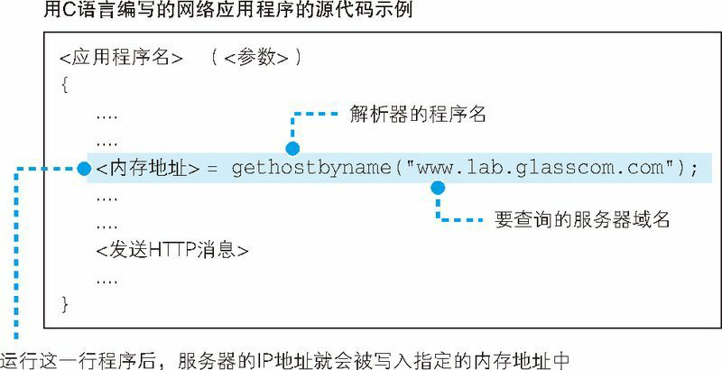
在应用程序中编写上图中的一行代码后就能够调用解析器完成向 DNS 服务器查询 IP 地址的操作。
调用解析器后，解析器会向 DNS 服务器发送查询消息，然后 DNS 服务器会返回响应消息。响应消息中包含查询到的 IP 地址，解析器会取出 IP 地址，并将其写入浏览器指定的内存地址中。只要运行上图 中的这一行程序，就可以完成前面所有这些工作，我们也就完成了 IP 地址的查询。接下来，浏览器在向 Web 服务器发送消息时，只要从该内存地址取出 IP 地址，并将它与 HTTP 请求消息一起交给操作系统就可以了。
根据域名查询 IP 地址时，浏览器会使用 Socket 库中的解析器。
解析器的内部原理
下面来看一看当应用程序调用解析器时，解析器内部是怎样工作的（下图）。网络应用程序（在我们的场景中就是指浏览器）调用解析器时，程序的控制流程就会转移到解析器的内部。

通过让多个程序按顺序执行操作，数据就被发送出去了。
一般来说，应用程序编写的操作内容是从上往下按顺序执行的，当到达需要调用解析器的部分时，对应的那一行程序就会被执行，应用程序本身的工作就会暂停（上图①）。然后，Socket 库中的解析器开始运行（上图 ②），完成应用程序委托的操作。像这样，由于调用了其他程序，原本运行的程序进入暂停状态，而被调用的程序开始运行，这就是“控制流程转移”42。
当控制流程转移到解析器后，解析器会生成要发送给 DNS 服务器的查询消息。这个过程与浏览器生成要发送给 Web 服务器的 HTTP 请求消息的过程类似，解析器会根据 DNS 的规格，生成一条表示“请告诉我 www.lab.glasscom.com 的 IP 地址”（HTTP 消息是用文本编写的，但 DNS 消息是使用二进制数据编写的） 的数据，并将它发送给 DNS 服务器（上图 ③）。发送消息这个操作并不是由解析器自身来执行，而是要委托给操作系统内部的协议栈（协议栈：操作系统内部的网络控制软件，也叫“协议驱动”“TCP/IP 驱动”等）来执行。这是因为和浏览器一样，解析器本身也不具备使用网络收发数据的功能。解析器调用协议栈后，控制流程会再次转移，协议栈会执行发送消息的操作，然后通过网卡将消息发送给 DNS 服务器（上图④⑤）。
当 DNS 服务器收到查询消息后，它会根据消息中的查询内容进行查询。这个查询的过程有点复杂。
总之，如果要访问的 Web 服务器已经在 DNS 服务器上注册，那么这条记录就能够被找到，然后其 IP 地址会被写入响应消息并返回给客户端（图 ⑥）。接下来，消息经过网络到达客户端，再经过协议栈被传递给解析器（图 ⑦⑧），然后解析器读取出消息取出 IP 地址，并将 IP 地址传递给应用程序（图⑨）。实际上，解析器会将取出的 IP 地址写入应用程序指定的内存地址中，图 1.11 用“< 内存地址 >”来表示，在实际的程序代码中应该写的是代表这一内存地址的名称。
到这里，解析器的工作就完成了，控制流程重新回到应用程序（浏览器）。现在应用程序已经能够从内存中取出 IP 地址了，所以说 IP 地址是用这种方式传递给应用程序的。
计算机的内部结构就是这样一层一层的。也就是说，很多程序组成不同的层次，彼此之间分工协作。当接到上层委派的操作时，本层的程序并不会完成所有的工作，而是会完成一部分工作，再将剩下的部分委派到下层来完成。
顺带一提，向 DNS 服务器发送消息时，我们当然也需要知道 DNS 服务器的 IP 地址。只不过这个 IP 地址是作为 TCP/IP 的一个设置项目事先设置好的，不需要再去查询了。不同的操作系统中 TCP/IP 的设置方法也有差异，Windows 中的设置如图 1.13 所示，解析器会根据这里设置的 DNS 服务器 IP 地址来发送消息。
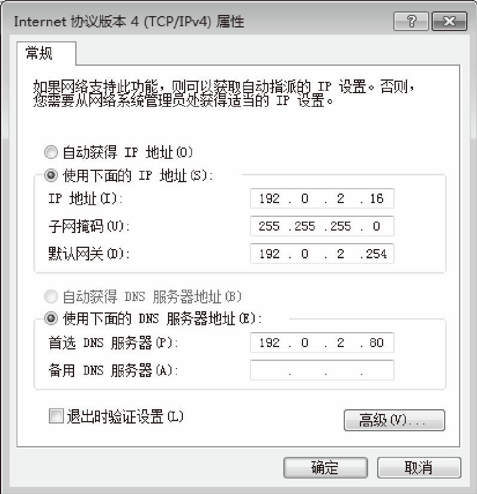
全世界 DNS 服务器的大接力
#### DNS 服务器的基本工作
DNS 服务器的基本工作就是接收来自客户端的查询消息，然后根据消息的内容返回响应。
其中，来自客户端的查询消息包含以下 3 种信息。
- （a）域名
服务器、邮件服务器（邮件地址中 @ 后面的部分）的名称 - （b）Class
在最早设计 DNS 方案时，DNS 在互联网以外的其他网络中的应用也被考虑到了，而 Class 就是用来识别网络的信息。不过，如今除了互联网并没有其他的网络了，因此 Class 的值永远是代表互联网的 IN - （c）记录类型
表示域名对应何种类型的记录。例如，当类型为 A 时，表示域名对应的是 IP 地址；当类型为 MX 时，表示域名对应的是邮件服务器。对于不同的记录类型，服务器向客户端返回的信息也会不同
DNS 服务器上事先保存有前面这 3 种信息对应的记录数据，如下图所示。DNS 服务器就是根据这些记录查找符合查询请求的内容并对客户端作出响应的。
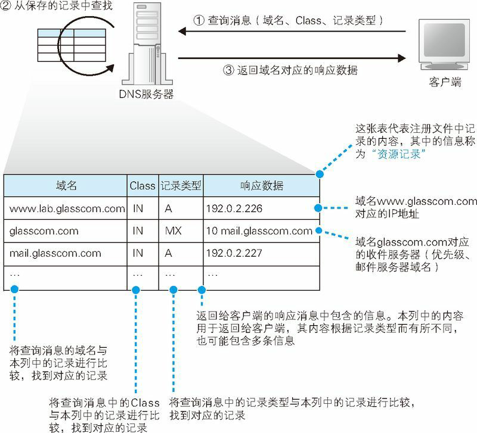
例如，如果要查询 www.lab.glasscom.com 这个域名对应的 IP 地址，客户端会向 DNS 服务器发送包含以下信息的查询消息。
- （a）域名 = www.lab.glasscom.com
- （b）Class = IN
- （c）记录类型 = A
然后，DNS 服务器会从已有的记录中查找域名、Class 和记录类型全部匹配的记录。假如 DNS 服务器中的记录如图 1.14 所示，那么第一行记录与查询消息中的 3 个项目完全一致。于是，DNS 服务器会将记录中的 192.0.2.226 这个值返回给客户端。然而，Web 服务器的域名有很多都是像 www.lab.glasscom.com 这样以 www 开头的，但这并不是一定之规，只是因为最早设计 Web 的时候，很多 Web 服务器都采用了 www 这样的命名，后来就形成了一个惯例而已。因此，无论是 WebServer1 也好，MySrv 也好，只要是作为 A(A 是 Address 的缩写) 记录在 DNS 服务器上注册的，都可以作为 Web 服务器的域名(不仅是 Web 服务器，像邮件服务器、数据库服务器等，无论任何服务器，只要注册了 A 类型的记录，都可以作为服务器的域名来使用。准确来说， A 类型的记录表示与 IP 地址所对应的域名，因此与其说是某个服务器的域名，不如说是被分配了某个 IP 地址的某台具体设备的域名)。
在查询 IP 地址时我们使用 A 这个记录类型，而查询邮件服务器时则要使用 MX(MX：Mail eXchange，邮件交换) 类型。这是因为在 DNS 服务器上，IP 地址是保存在 A 记录中的，而邮件服务器则是保存在 MX 记录中的。例如，对于一个邮件地址 tone@glasscom.com，当需要知道这个地址对应的邮件服务器时，我们需要提供 @ 后面的那一串名称。查询消息的内容如下。
- （a）域名 = glasscom.com
- （b）Class = IN
- （c）记录类型 = MX
DNS 服务器会返回 10 和 mail.glasscom.com 这两条信息。当记录类型为 MX 时，DNS 服务器会在记录中保存两种信息，分别是邮件服务器的域名和优先级(当一个邮件地址对应多个邮件服务器时，需要根据优先级来判断哪个邮件服务器是优先的。优先级数值较小的邮件服务器代表更优先)。此外，MX 记录的返回消息还包括邮件服务器 mail.glasscom.com 的 IP 地址。上表的第三行就是 mail.glasscom.com 的 IP 地址，因此只要用 mail.glasscom.com 的域名就可以找到这条记录。在这个例子中，我们得到的 IP 地址是 192.0.2.227。
综上所述，DNS 服务器的基本工作就是根据需要查询的域名和记录类型查找相关的记录，并向客户端返回响应消息。
DNS 服务器会从域名与 IP 地址的对照表中查找相应的记录，并返回 IP 地址。
前面只介绍了 A 和 MX 这两个记录类型，实际上还有很多其他的类型。例如根据 IP 地址反查域名的 PTR 类型，查询域名相关别名的 CNAME 类型，查询 DNS 服务器 IP 地址的 NS 类型，以及查询域名属性信息的 SOA 类型等。尽管 DNS 服务器的工作原理很简单，不过是根据查询消息中的域名和记录类型来进行查找并返回响应的信息而已，但通过组合使用不同的记录类型，就可以处理各种各样的信息。
域名的层次结构
在前面的讲解中，我们假设要查询的信息已经保存在 DNS 服务器内部的记录中了。如果是在像公司内部网络这样 Web 和邮件服务器数量有限的环境中，所有的信息都可以保存在一台 DNS 服务器中，其工作方式也就完全符合我们前面讲解的内容。然而，互联网中存在着不计其数的服务器，将这些服务器的信息全部保存在一台 DNS 服务器中是不可能的，因此一定会出现在 DNS 服务器中找不到要查询的信息的情况。下面来看一看此时 DNS 服务器是如何工作的。
直接说答案的话很简单，就是将信息分布保存在多台 DNS 服务器中，这些 DNS 服务器相互接力配合，从而查找出要查询的信息。不过，这个机制其实有点复杂，因此我们先来看一看信息是如何在 DNS 服务器上注册并保存的。
首先，DNS 服务器中的所有信息都是按照域名以分层次的结构来保存的。层次结构这个词听起来可能有点不容易懂，其实就类似于公司中的事业集团、部门、科室这样的结构。层次结构能够帮助我们更好地管理大量的信息。
DNS 中的域名都是用句点来分隔的，比如 www.lab.glasscom.com，这里的句点代表了不同层次之间的界限，就相当于公司里面的组织结构不用部、科之类的名称来划分，只是用句点来分隔而已。在域名中，越靠右的位置表示其层级越高，比如 www.lab.glasscom.com 这个域名如果按照公司里的组织结构来说，大概就是“com 事业集团 glasscom 部 lab 科的 www”这样。其中，相当于一个层级的部分称为域。因此，com 域的下一层是 glasscom 域，再下一层是 lab 域，再下面才是 www 这个名字。
这种具有层次结构的域名信息会注册到 DNS 服务器中，而每个域都是作为一个整体来处理的。换句话说就是，一个域的信息是作为一个整体存放在 DNS 服务器中的，不能将一个域拆开来存放在多台 DNS 服务器中。不过，DNS 服务器和域之间的关系也并不总是一对一的，一台 DNS 服务器中也可以存放多个域的信息。为了避免把事情搞得太复杂，这里先假设一台 DNS 服务器中只存放一个域的信息，后面的讲解也是基于这个前提来进行的。于是，DNS 服务器也具有了像域名一样的层次结构，每个域的信息都存放在相应层级的 DNS 服务器中。例如，这里有一个公司的域，那么就相应地有一台 DNS 服务器，其中存放了公司中所有 Web 服务器和邮件服务器的信息。
这里再补充一点。对于公司域来说，例如现在需要为每一个事业集团配备一台 DNS 服务器，分别管理各事业集团自己的信息，但我们之前也说过一个域是不可分割的，这该怎么办呢？没关系，我们可以在域的下面创建下级域 51，然后再将它们分别分配给各个事业集团。比如，假设公司的域为 example.co.jp，我们可以在这个域的下面创建两个子域，即 sub1.example.co.jp 和 sub2.example.co.jp，然后就可以将这两个下级域分配给不同的事业集团来使用。如果公司下级的组织不是事业部而是子公司，对于域来说也是没有区别的。因为域并不代表“事业集团”这一特定组织，无论是子公司还是什么别的组织名称，都可以分配相应的域。实际上，互联网中的域也是一样，通过创建下级的域来分配给不同的国家、公司和组织使用。通过实际的域名可能更容易理解，比如 www.nikkeibp.co.jp 这个域名，最上层的 jp 代表分配给日本这个国家的域；下一层的 co 是日本国内进行分类的域，代表公司；再下层的 nikkeibp 就是分配给某个公司的域；最下层的 www 就是服务器的名称。
寻找相应的 DNS 服务器并获取 IP 地址
下面再来看一看如何找到 DNS 服务器中存放的信息。这里的关键在于如何找到我们要访问的 Web 服务器的信息归哪一台 DNS 服务器管。
互联网中有数万台 DNS 服务器，肯定不能一台一台挨个去找。我们可以采用下面的办法。首先，将负责管理下级域的 DNS 服务器的 IP 地址注册到它们的上级 DNS 服务器中，然后上级 DNS 服务器的 IP 地址再注册到更上一级的 DNS 服务器中，以此类推。也就是说，负责管理 lab.glasscom.com 这个域的 DNS 服务器的 IP 地址需要注册到glasscom.com 域的 DNS 服务器中，而 glasscom.com 域的 DNS 服务器的 IP 地址又需要注册到 com 域的 DNS 服务器中。这样，我们就可以通过上级 DNS 服务器查询出下级 DNS 服务器的 IP 地址，也就可以向下级 DNS 服务器发送查询请求了。
在前面的讲解中，似乎 com、jp 这些域（称为顶级域）就是最顶层了，它们各自负责保存下级 DNS 服务器的信息，但实际上并非如此。在互联网中，com 和 jp 的上面还有一级域，称为根域。根域不像 com、jp 那样有自己的名字，因此在一般书写域名时经常被省略，如果要明确表示根域，应该像 www.lab.glasscom.com. 这样在域名的最后再加上一个句点，而这个最后的句点就代表根域。不过，一般都不写最后那个句点，因此根域的存在往往被忽略，但根域毕竟是真实存在的，根域的 DNS 服务器中保管着 com、jp 等的 DNS 服务器的信息。由于上级 DNS 服务器保管着所有下级 DNS 服务器的信息，所以我们可以从根域开始一路往下顺藤摸瓜找到任意一个域的 DNS 服务器。
除此之外还需要完成另一项工作，那就是将根域的 DNS 服务器信息保存在互联网中所有的 DNS 服务器中。这样一来，任何 DNS 服务器就都可以找到并访问根域 DNS 服务器了。因此，客户端只要能够找到任意一台 DNS 服务器，就可以通过它找到根域 DNS 服务器，然后再一路顺藤摸瓜找到位于下层的某台目标 DNS 服务器（下图）。分配给根域 DNS 服务器的 IP 地址在全世界仅有 13 个（根域 DNS 服务器在运营上使用多台服务器来对应一个 IP 地址，因此尽管 IP 地址只有 13 个，但其实服务器的数量是很多的），而且这些地址几乎不发生变化，因此将这些地址保存在所有的 DNS 服务器中也并不是一件难事。实际上，根域 DNS 服务器的相关信息已经包含在 DNS 服务器程序的配置文件中了，因此只要安装了 DNS 服务器程序，这些信息也就被自动配置好了。
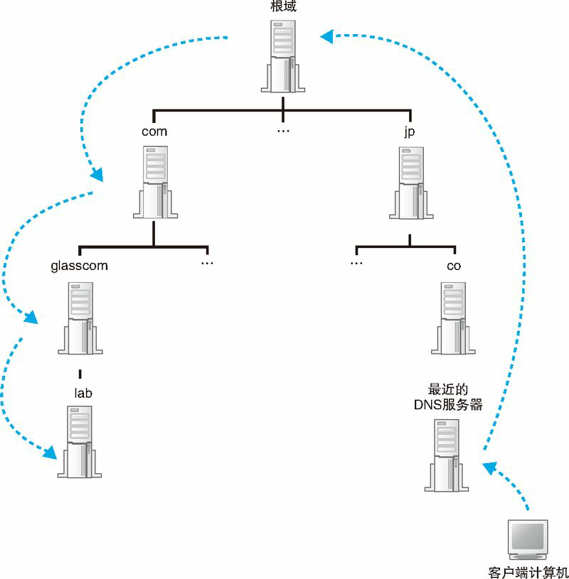
到这里所有的准备工作就都完成了。当我们配置一台 DNS 服务器时，必须要配置好上面这些信息，这样 DNS 服务器就能够从上万台 DNS 服务器中找到目标服务器。下面就来看一看这个过程是如何进行的。
如下图 1.16 所示，客户端首先会访问最近的一台 DNS 服务器（也就是客户端的 TCP/IP 设置中填写的 DNS 服务器地址），假设我们要查询 www.lab.glasscom.com 这台 Web 服务器的相关信息（图 1.16 ①）。由于最近的 DNS 服务器中没有存放 www.lab.glasscom.com 这一域名对应的信息，所以我们需要从顶层开始向下查找。最近的 DNS 服务器中保存了根域 DNS 服务器的信息，因此它会将来自客户端的查询消息转发给根域 DNS 服务器（图 1.16 ②）。根域服务器中也没有 www.lab.glasscom.com 这个域名，但根据域名结构可以判断这个域名属于 com 域，因此根域 DNS 服务器会返回它所管理的 com 域中的 DNS 服务器的 IP 地址，意思是“虽然我不知道你要查的那个域名的地址，但你可以去 com 域问问看”。接下来，最近的 DNS 服务器又会向 com 域的 DNS 服务器发送查询消息（图 1.16 ③）。com 域中也没有 www.lab.glasscom.com 这个域名的信息，和刚才一样，com 域服务器会返回它下面的 glasscom.com 域的 DNS 服务器的 IP 地址。以此类推，只要重复前面的步骤，就可以顺藤摸瓜找到目标 DNS 服务器（图 1.16 ⑤），只要向目标 DNS 服务器发送查询消息，就能够得到我们需要的答案，也就是 www.lab.glasscom.com 的 IP 地址了。
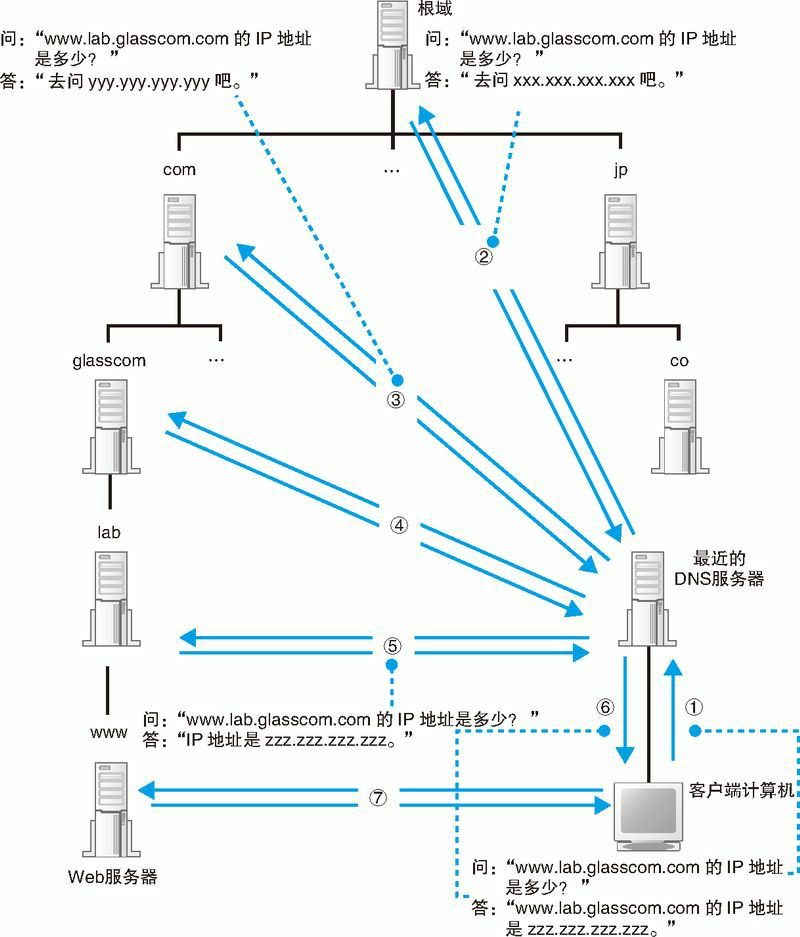
收到客户端的查询消息之后，DNS 服务器会按照前面的方法来查询 IP 地址，并返回给客户端（图 1.16 ⑥）。这样，客户端就知道了 Web 服务器的 IP 地址，也就能够对其进行访问了（图 1.16 ⑦）。
搞清楚了 DNS 服务器的工作方式之后，我们将图 1.12 和图 1.16 连起来看看。图 1.16 中的①和⑥分别相当于图 1.12 中的⑤和⑥，将这部分重合起来，就可以将这两张图连起来了。不过，在图 1.12 和图 1.16 中，客户端和 DNS 服务器的上下位置关系是颠倒着的，因此需要将其中一张图倒过来看。这样，我们就可以看清楚浏览器调用 gethostbyname 查询 Web 服务器地址的全貌，这也就是向 DNS 服务器查询 IP 地址的实际过程。
通过缓存加快 DNS 服务器的响应
图 1.16 展示的是基本原理，与真实互联网中的工作方式还是有一些区别的。在真实的互联网中，一台 DNS 服务器可以管理多个域的信息，因此并不是像图 1.16 这样每个域都有一台自己的 DNS 服务器。图中，每一个域旁边都写着一台 DNS 服务器，但现实中上级域和下级域有可能共享同一台 DNS 服务器。在这种情况下，访问上级 DNS 服务器时就可以向下跳过一级 DNS 服务器，直接返回再下一级 DNS 服务器的相关信息。
此外，有时候并不需要从最上级的根域开始查找，因为 DNS 服务器有一个缓存功能，可以记住之前查询过的域名。如果要查询的域名和相关信息已经在缓存中，那么就可以直接返回响应，接下来的查询可以从缓存的位置开始向下进行。相比每次都从根域找起来说，缓存可以减少查询所需的时间。
并且，当要查询的域名不存在时，“不存在”这一响应结果也会被缓存。这样，当下次查询这个不存在的域名时，也可以快速响应。
这个缓存机制中有一点需要注意，那就是信息被缓存后，原本的注册信息可能会发生改变，这时缓存中的信息就有可能是不正确的。因此，DNS 服务器中保存的信息都设置有一个有效期，当缓存中的信息超过有效期后，数据就会从缓存中删除。而且，在对查询进行响应时，DNS 服务器也会告知客户端这一响应的结果是来自缓存中还是来自负责管理该域名的 DNS 服务器。
委托协议栈发送消息
数据收发操作概览
知道了 IP 地址之后，就可以委托操作系统内部的协议栈向这个目标 IP 地址，也就是我们要访问的 Web 服务器发送消息了。要发送给 Web 服务器的 HTTP 消息是一种数字信息（digital data），因此也可以说是委托协议栈来发送数字信息。收发数字信息这一操作不仅限于浏览器，对于各种使用网络的应用程序来说都是共通的。因此，这一操作的过程也不仅适用于 Web，而是适用于任何网络应用程序（通过 DNS 服务器查询 IP 地址的操作也同样适用于所有网络应用程序）。下面就来一起探索这一操作的过程。
和向 DNS 服务器查询 IP 地址的操作一样，这里也需要使用 Socket 库中的程序组件。不过，查询 IP 地址只需要调用一个程序组件就可以了，而这里需要按照指定的顺序调用多个程序组件，这个过程有点复杂。发送数据是一系列操作相结合来实现的，如果不能理解这个操作的全貌，就无法理解其中每个操作的意义。因此，我们先来介绍一下收发数据操作的整体思路。
向操作系统内部的协议栈发出委托时，需要按照指定的顺序来调用 Socket 库中的程序组件。
使用 Socket 库来收发数据的操作过程如图 1.17 所示（图 1.17 中展示的是用 TCP 协议来收发数据的过程，还有另外一种名为 UDP（User Datagram Protocol，用户数据报协议）的协议）。简单来说，收发数据的两台计算机之间连接了一条数据通道，数据沿着这条通道流动，最终到达目的地。我们可以把数据通道想象成一条管道，将数据从一端送入管道，数据就会到达管道的另一端然后被取出。数据可以从任何一端被送入管道，数据的流动是双向的。不过，这并不是说现实中真的有这么一条管道，只是为了帮助大家理解数据收发操作的全貌。
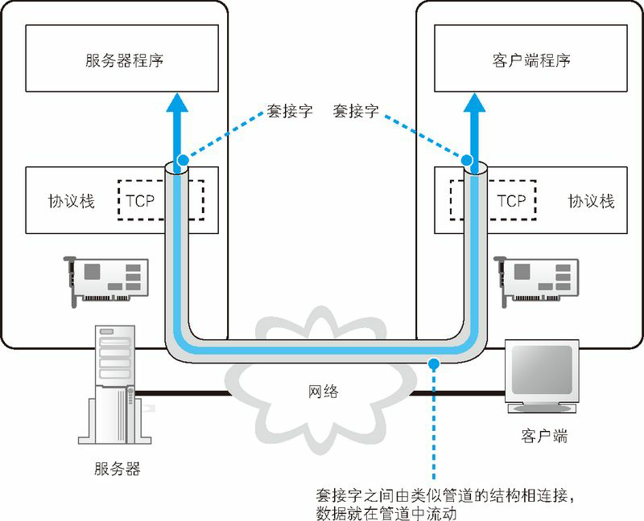
收发数据的整体思路就是这样，但还有一点也非常重要。光从图上来看，这条管道好像一开始就有，实际上并不是这样，在进行收发数据操作之前，双方需要先建立起这条管道才行。建立管道的关键在于管道两端的数据出入口，这些出入口称为套接字。我们需要先创建套接字，然后再将套接字连接起来形成管道。实际的过程是下面这样的。首先，服务器一方先创建套接字，然后等待客户端向该套接字连接管道(服务器程序一般会在启动后就创建好套接字并等待客户端连接管道)。当服务器进入等待状态时，客户端就可以连接管道了。具体来说，客户端也会先创建一个套接字，然后从该套接字延伸出管道，最后管道连接到服务器端的套接字上。当双方的套接字连接起来之后，通信准备就完成了。接下来，就像我们刚刚讲过的一样，只要将数据送入套接字就可以收发数据了。
我们再来看一看收发数据操作结束时的情形。当数据全部发送完毕之后，连接的管道将会被断开。管道在连接时是由客户端发起的，但在断开时可以由客户端或服务器任意一方发起（实际上，管道切断的顺序是根据应用程序的规则来决定的。在 Web 中，断开顺序根据 HTTP 版本的不同而不同，在 HTTP1.0 中，当服务器向客户端发送完所有 Web 数据之后，服务器一方会断开管道）。其中一方断开后，另一方也会随之断开，当管道断开后，套接字也会被删除。到此为止，通信操作就结束了。
综上所述，收发数据的操作分为若干个阶段，可以大致总结为以下 4 个。
- （1）创建套接字（创建套接字阶段）
- （2）将管道连接到服务器端的套接字上（连接阶段）
- （3）收发数据（通信阶段）
- （4）断开管道并删除套接字（断开阶段）
在每个阶段，Socket 库中的程序组件都会被调用来执行相关的数据收发操作。不过，在探索其具体过程之前，我们来补充一点内容。前面这 4 个操作都是由操作系统中的协议栈来执行的，浏览器等应用程序并不会自己去做连接管道、放入数据这些工作，而是委托协议栈来代劳。本章将要介绍的只是这个“委托”的操作。关于协议栈收到委托之后具体是如何连接管道和放入数据的，我们将在后面介绍。此外，这些委托的操作都是通过调用 Socket 库中的程序组件来执行的，但这些数据通信用的程序组件其实仅仅充当了一个桥梁的角色，并不执行任何实质性的操作，应用程序的委托内容最终会被原原本本地传递给协议栈。因此，我们无法形象地展示这些程序组件到底完成了怎样的工作，与其勉强强调 Socket 库的存在，还不如将 Socket 库和协议栈看成一个整体并讲解它们的整体行为让人更容易理解。因此，后文将会采用这样的讲法。不过，请大家不要忘记 Socket 库这一桥梁的存在，正如图 1.12 中所示的一样。
创建套接字阶段
下面我们就来探索一下应用程序（浏览器）委托收发数据的过程。这个过程的关键点就是像对 DNS 服务器发送查询一样，调用 Socket 库中的特定程序组件。访问 DNS 服务器时我们调用的是一个叫作 gethostbyname 的程序组件（也就是解析器），而这一次则需要按照一定的顺序调用若干个程序组件，其过程如图 1.18 所示，请大家边看图边继续看下面的讲解。其中，调用 Socket 库中的程序组件的思路和图 1.11 旁边关于调用解析器的说明是一样的。
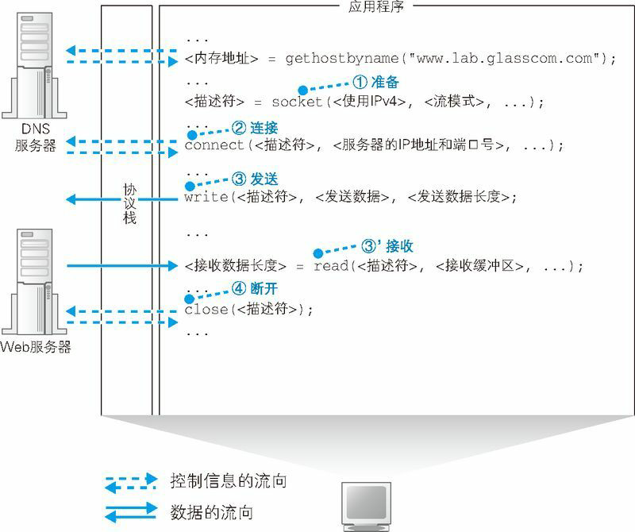
分为创建套接字、连接 Web 服务器、发送数据、接收数据、断开连接几个阶段。
首先是套接字创建阶段。客户端创建套接字的操作非常简单，只要调用 Socket 库中的 socket 程序组件就可以了（图 1.18 ①）。和调用解析器一样，调用 socket 之后，控制流程会转移到 socket 内部并执行创建套接字的操作，完成之后控制流程又会被移交回应用程序。只不过，socket 的内部操作并不像解析器那样简单。
套接字创建完成后，协议栈会返回一个描述符，应用程序会将收到的描述符存放在内存中。描述符是用来识别不同的套接字的，大家可以作如下理解。我们现在只关注了浏览器访问 Web 服务器的过程，但实际上计算机中会同时进行多个数据的通信操作，比如可以打开两个浏览器窗口，同时访问两台 Web 服务器。这时，有两个数据收发操作在同时进行，也就需要创建两个不同的套接字。这个例子说明，同一台计算机上可能同时存在多个套接字，在这样的情况下，我们就需要一种方法来识别出某个特定的套接字，这种方法就是描述符。我们可以将描述符理解成给某个套接字分配的编号。也许光说编号还不够形象，大家可以想象一下在酒店寄存行李时的场景，酒店服务人员会给你一个号码牌，向服务人员出示号码牌，就可以取回自己寄存的行李，描述符的原理和这个差不多。当创建套接字后，我们就可以使用这个套接字来执行收发数据的操作了。这时，只要我们出示描述符，协议栈就能够判断出我们希望用哪一个套接字来连接或者收发数据了。
应用程序是通过“描述符”这一类似号码牌的东西来识别套接字的。
连接阶段：把管道接上去
接下来，我们需要委托协议栈将客户端创建的套接字与服务器那边的套接字连接起来。应用程序通过调用 Socket 库中的名为 connect 的程序组件来完成这一操作。这里的要点是当调用 connect 时，需要指定描述符、服务器 IP 地址和端口号这 3 个参数（图 1.18 ②）。
第 1 个参数，即描述符，就是在创建套接字的时候由协议栈返回的那个描述符。connect 会将应用程序指定的描述符告知协议栈，然后协议栈根据这个描述符来判断到底使用哪一个套接字去和服务器端的套接字进行连接，并执行连接的操作（当调用 Socket 库中的程序组件时，应用程序所指定的参数会通过 Socket 库的程序组件传递给协议栈，并由协议栈来实际执行相应的操作。在后面的内容中，这一过程都是相同的，因此不再赘述）。
第 2 个参数，即服务器 IP 地址，就是通过 DNS 服务器查询得到的我们要访问的服务器的 IP 地址。在 DNS 服务器的部分已经讲过，在进行数据收发操作时，双方必须知道对方的 IP 地址并告知协议栈。这个参数就是那个 IP 地址了。
第 3 个参数，即端口号，这个需要稍微解释一下。可能大家会觉得， IP 地址就像电话号码，只要知道了电话号码不就可以联系到对方了吗？其实，网络通信和电话还是有区别的，我们先来看一看 IP 地址到底能用来干什么。IP 地址是为了区分网络中的各个计算机而分配的数值（准确地说，IP 地址不是分配给每一台设备的，而是分配给设备中安装的网络硬件的。因此，如果一台设备中安装了多个网络硬件，那么就会有多个 IP 地址）。因此，只要知道了 IP 地址，我们就可以识别出网络上的某台计算机。但是，连接操作的对象是某个具体的套接字，因此必须要识别到具体的套接字才行，而仅凭 IP 地址是无法做到这一点的。我们打电话的时候，也需要通过“请帮我找一下某某某”这样的方式来找到具体的某个联系人，而端口号就是这样一种方式。当同时指定 IP 地址和端口号时，就可以明确识别出某台具体的计算机上的某个具体的套接字。
也许有人会说：“能不能用前面创建套接字时提到的那个描述符来识别套接字呢？”这种方法其实是行不通的，因为描述符是和委托创建套接字的应用程序进行交互时使用的，并不是用来告诉网络连接的另一方的，因此另一方并不知道这个描述符。同样地，客户端也无法知道服务器上的描述符。因此，客户端也无法通过服务器端的描述符去确定位于服务器上的某一个套接字。所以，我们需要另外一个对客户端也同样适用的机制，而这个机制就是端口号。如果说描述符是用来在一台计算机内部识别套接字的机制，那么端口号就是用来让通信的另一方能够识别出套接字的机制。
既然需要通过端口号来确定连接对象的套接字，那么到底应该使用几号端口呢？网址中好像并没有端口号，也不能像 IP 地址一样去问 DNS 服务器。找了半天也没有任何线索，这可怎么办？其实，这件事情也并没有那么神奇，服务器上所使用的端口号是根据应用的种类事先规定好的，仅此而已。比如 Web 是 80 号端口，电子邮件是 25 号端口（端口号的规则是全球统一的，为了避免重复和冲突，端口号和 IP 地址一样都是由 IANA（Internet Assigned Number Authority，互联网编号管理局）这一组织来统一管理的）。
可能大家还有一个疑问，既然确定连接对象的套接字需要使用端口号，那么服务器也得知道客户端的套接字号码才行吧，这个问题是怎么解决的呢？事情是这样的，首先，客户端在创建套接字时，协议栈会为这个套接字随便分配一个端口号（在创建套接字时，服务器也可以自行指定端口号，但一般并不常用）。接下来，当协议栈执行连接操作时，会将这个随便分配的端口号通知给服务器。
说了这么多，总而言之，就是当调用 connect 时，协议栈就会执行连接操作。当连接成功后，协议栈会将对方的 IP 地址和端口号等信息保存在套接字中，这样我们就可以开始收发数据了。
描述符：应用程序用来识别套接字的机制
IP 地址和端口号：客户端和服务器之间用来识别对方套接字的机制
通信阶段：传递消息
当套接字连接起来之后，剩下的事情就简单了。只要将数据送入套接字，数据就会被发送到对方的套接字中。当然，应用程序无法直接控制套接字，因此还是要通过 Socket 库委托协议栈来完成这个操作。这个操作需要使用 write 这个程序组件，具体过程如下。
首先，应用程序需要在内存中准备好要发送的数据。根据用户输入的网址生成的 HTTP 请求消息就是我们要发送的数据。接下来，当调用 write 时，需要指定描述符和发送数据（图 1.18 ③），然后协议栈就会将数据发送到服务器。由于套接字中已经保存了已连接的通信对象的相关信息，所以只要通过描述符指定套接字，就可以识别出通信对象，并向其发送数据。接着，发送数据会通过网络到达我们要访问的服务器。
接下来，服务器执行接收操作，解析收到的数据内容并执行相应的操作，向客户端返回响应消息。
当消息返回后，需要执行的是接收消息的操作。接收消息的操作是通过 Socket 库中的 read 程序组件委托协议栈来完成的（图 1.18 ③’）。调用 read 时需要指定用于存放接收到的响应消息的内存地址，这一内存地址称为接收缓冲区。于是，当服务器返回响应消息时，read 就会负责将接收到的响应消息存放到接收缓冲区中。由于接收缓冲区是一块位于应用程序内部的内存空间，因此当消息被存放到接收缓冲区中时，就相当于已经转交给了应用程序。
1.4.5 断开阶段：收发数据结束
当浏览器收到数据之后，收发数据的过程就结束了。接下来，我们需要调用 Socket 库的 close 程序组件进入断开阶段（图 1.18 ④）。最终，连接在套接字之间的管道会被断开，套接字本身也会被删除。
断开的过程如下。Web 使用的 HTTP 协议规定，当 Web 服务器发送完响应消息之后，应该主动执行断开操作（根据应用种类不同，客户端和服务器哪一方先执行 close 都有可能。有些应用中是客户端先执行 close，而另外一些应用中则是服务器先执行 close），因此 Web 服务器会首先调用 close 来断开连接。断开操作传达到客户端之后，客户端的套接字也会进入断开阶段。接下来，当浏览器调用 read 执行接收数据操作时，read 会告知浏览器收发数据操作已结束，连接已经断开。浏览器得知后，也会调用 close 进入断开阶段。
这就是 HTTP 的工作过程。HTTP 协议将 HTML 文档和图片都作为单独的对象来处理，每获取一次数据，就要执行一次连接、发送请求消息、接收响应消息、断开的过程。因此，如果一个网页中包含很多张图片，就必须重复进行很多次连接、收发数据、断开的操作。对于同一台服务器来说，重复连接和断开显然是效率很低的，因此后来人们又设计出了能够在一次连接中收发多个请求和响应的方法。在 HTTP 版本 1.1 中就可以使用这种方法，在这种情况下，当所有数据都请求完成后，浏览器会主动触发断开连接的操作。